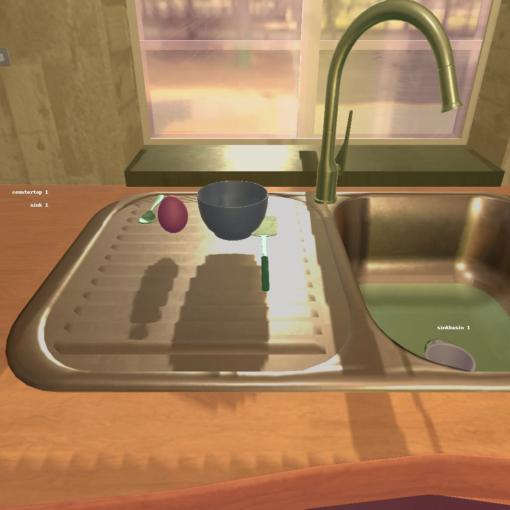

---------------------------------------------------------task: 26---------------------------------------------------------
--------------------------------------------------------------------------------------------------------------------------------------------------------------------
--------------------------------------------------------------------------------------------------------------------------------------------------------------------
Step:--------------------------------------------------------------------------0-------------------------------------------------------------------------------
----------------------------------------
VLM Prompt:
Image1:
**Instruction**
1. Analyze the provided image to identify all visible household objects, focusing on those relevant to the task description "find two kettle and put them in cabinet."
2. Use the analysis of the image and the task hint "The agent must find an object of the desired type, pick it up, find the correct location to place it, put it down there, then look for another object of the desired type, pick it up, return to previous location, and put it down there with the other object." to answer the question: what is the most reasonable action in the choices for the task description "find two kettle and put them in cabinet"?
4. Decide and write the answer using the template: The answer is: (i): , where i is the real number. If there is no desired object in the image, search every place based on **Initial Observation** to find the object. And if no one is exactly correct, choose a similar answer.
**Initial Observation**
You are in the middle of a room. Looking quickly around you, you can see countertop (1), coffeemachine (1), cabinet (1-4), drawer (1-8), sink (1), sinkbasin (1), garbagecan (1), fridge (1), microwave (1), dresser (1), sidetable (1)
**Answer Choices**
(1): go to countertop 1
(2): go to coffeemachine 1
(3): go to cabinet 1
(4): go to cabinet 2
(5): go to drawer 1
(6): go to sink 1
(7): go to sinkbasin 1
(8): go to cabinet 3
(9): go to garbagecan 1
(10): go to cabinet 4
(11): go to drawer 2
(12): go to fridge 1
(13): go to microwave 1
(14): go to dresser 1
(15): go to sidetable 1
(16): go to drawer 3
(17): go to drawer 4
(18): go to drawer 5
(19): go to drawer 6
(20): go to drawer 7
(21): go to drawer 8
**Answer**
Let's think step by step by following the instructions.
----------------------------------------
----------------------------------------
Original Response:
First, we need to identify if there are any kettles in the provided image. Analyzing the image, we can see a countertop, a sink, a sinkbasin, and what appears to be a purple eggplant and a bowl with a spoon in it. There are no kettles visible in the image.
Since the task is to find two kettles and put them in a cabinet, and there are no kettles visible in the image, we must search every place based on the Initial Observation to find the object.
The most reasonable action from the choices provided would be to start looking in places where a kettle is most likely to be found, such as the cabinets or drawers where kitchen items are usually stored.
The answer is: (3): go to cabinet 1, as it is the first cabinet mentioned in the Initial Observation, and it would be logical to start searching from the first option. If the kettle is not found there, the search would continue to the next logical storage space.
----------------------------------------
----------------------------------------
>>> Refine Original VLM Response and Get Pure Action: go to cabinet 1, as it is the first cabinet mentioned in the Initial Observation, and it would be logical to start searching from the first option
----------------------------------------
-----------------------------------------------------------------
Running time: 10.313816785812378 seconds
Total Money: 16.567610000000005
-----------------------------------------------------------------
-----------------------------------------------------------------
Text Observation:Nothing happens.
-----------------------------------------------------------------
UNSUCCEED